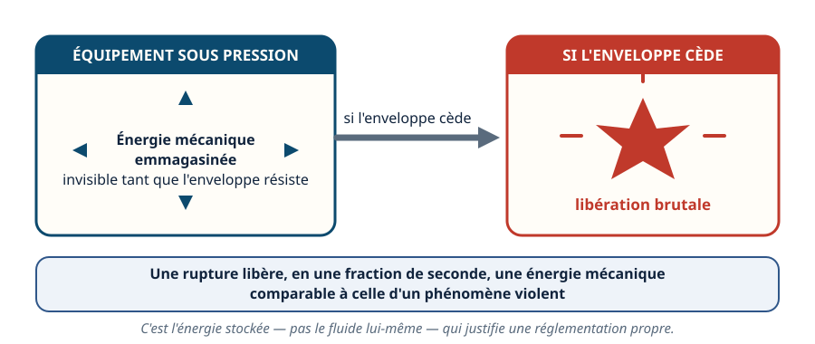
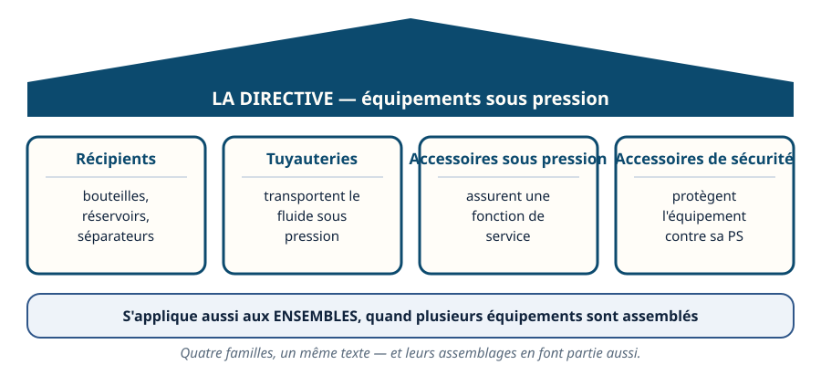
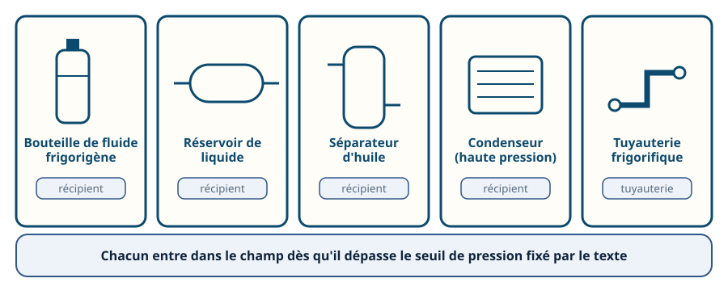
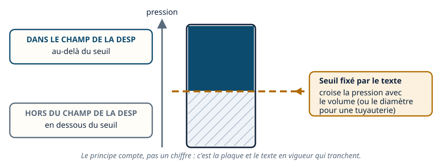
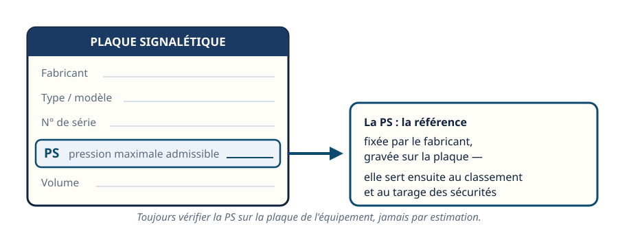
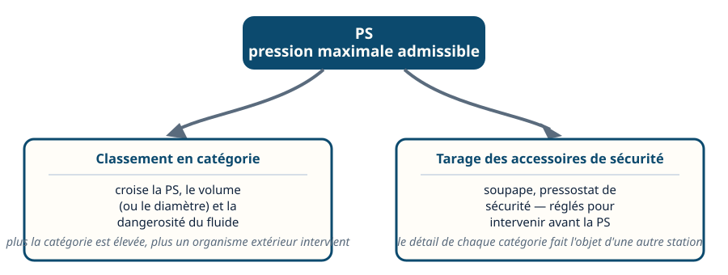
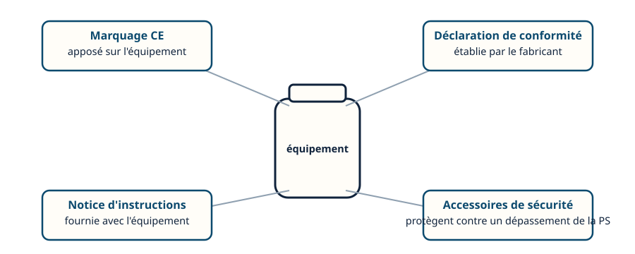
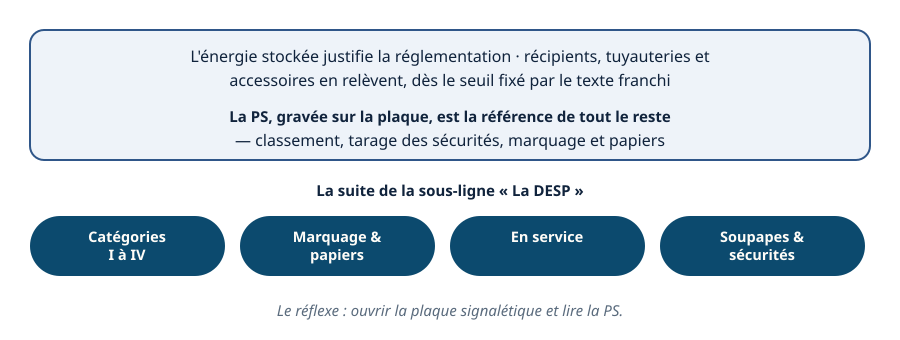

La directive — pourquoi une réglementation pour le sous pression
Mini-station commentée · 8 écrans et 4 questions · environ 10 minutes
Objectif
À la fin de la station, vous savez pourquoi les équipements sous pression relèvent d'un texte à part, ce que couvre son champ d'application, ce qu'est la pression maximale admissible (PS), et pourquoi elle est la référence de tout le reste — ancré dans des équipements frigorifiques que vous connaissez.
Chaque écran peut être expliqué à voix haute : le bouton « Écouter » commente ce que vous voyez. Rien n'est dit qui ne soit aussi écrit.
1 / 12
Écran 1 sur 8
L'énergie qui ne se voit pas
Un volume fermé, rempli d'un fluide sous pression, stocke de l'énergie mécanique. Tant que l'enveloppe résiste, cette énergie reste invisible. Si l'enveloppe cède, elle se libère d'un coup.
Une rupture brutale d'un récipient sous pression libère, en une fraction de seconde, une énergie mécanique comparable à celle d'un phénomène violent : projection de fragments, onde de choc, déplacement d'air. C'est cette énergie stockée — pas le fluide lui-même — qui justifie une réglementation propre aux équipements sous pression.

C'est l'énergie stockée, pas le fluide, qui justifie ce texte.
Écran 2 sur 8
Le champ d'application de la directive
La directive dite DESP (directive équipements sous pression) encadre la conception et la fabrication des équipements destinés à contenir un fluide sous pression :
les récipients — bouteilles, réservoirs, séparateurs ;
les tuyauteries qui transportent le fluide sous pression ;
les accessoires sous pression, qui remplissent une fonction de service ;
les accessoires de sécurité, qui protègent l'équipement.
Elle s'applique aussi aux ensembles, quand plusieurs équipements sont assemblés pour former un tout fonctionnel.

Quatre familles, un même texte — et leurs assemblages en font partie aussi.
Écran 3 sur 8
Ancrée dans le froid : des exemples que vous connaissez
Ces catégories ne sont pas abstraites : elles décrivent des équipements que vous manipulez.
une bouteille de fluide frigorigène est un récipient sous pression ;
un réservoir de liquide aussi ;
un séparateur d'huile également ;
un condenseur, côté haute pression, l'est aussi ;
la tuyauterie frigorifique qui les relie relève, elle, de la catégorie « tuyauterie ».
Chacun de ces équipements entre dans le champ de la directive dès qu'il dépasse le seuil de pression fixé par le texte.

Des équipements familiers, au sens de la directive.
Écran 4 sur 8
Le seuil qui fait entrer dans le champ
Tous les équipements contenant un fluide ne relèvent pas de la directive : elle s'applique au-delà d'un seuil de pression fixé par le texte. En dessous, l'équipement reste hors du champ de la DESP — il peut relever d'autres règles, plus légères.
Ce seuil se lit dans le texte en vigueur, en croisant la pression avec le volume de l'équipement (ou le diamètre pour une tuyauterie). Retenez le principe, pas un chiffre : c'est la plaque de l'équipement et le texte en vigueur qui tranchent, cas par cas.

Le principe compte, pas un chiffre.
Écran 5 sur 8
La PS, pression maximale admissible
La pression maximale admissible, notée PS, est la pression que l'équipement est conçu pour supporter. Elle est fixée par le fabricant, et elle figure sur la plaque signalétique de l'équipement.
La PS n'est pas qu'une donnée technique parmi d'autres : c'est la référence à partir de laquelle tout le reste se construit — le classement de l'équipement, et le tarage de ses accessoires de sécurité.

Toujours vérifier la PS sur la plaque, jamais par estimation.
Écran 6 sur 8
La PS, référence du classement et de la sécurité
À partir de la PS, deux choses se règlent :
le classement en catégorie de l'équipement, qui croise la PS, le volume (ou le diamètre pour une tuyauterie) et la dangerosité du fluide — plus la catégorie est élevée, plus l'intervention d'un organisme extérieur est requise ;
le tarage des accessoires de sécurité — soupape, pressostat de sécurité — qui doivent intervenir avant que la pression ne dépasse la PS.
Le détail des catégories fait l'objet d'une autre station : retenez ici que tout part de la PS.

Tout part de la PS.
Écran 7 sur 8
Ce qui accompagne l'équipement
Un équipement sous pression entrant dans le champ de la directive est accompagné de plusieurs éléments :
le marquage CE, apposé sur l'équipement ;
une déclaration de conformité, établie par le fabricant ;
une notice d'instructions, qui accompagne l'équipement ;
ses accessoires de sécurité, qui le protègent contre un dépassement de sa PS.
Ces éléments seront détaillés dans une autre station : ici, retenez qu'ils ne sont pas optionnels.

Quatre éléments qui suivent l'équipement, pas des options.
Écran 8 sur 8
Bilan et le réflexe
L'énergie stockée dans un équipement sous pression justifie une réglementation propre.
Le champ d'application couvre récipients, tuyauteries, accessoires sous pression et accessoires de sécurité, seuls ou en ensembles.
Des équipements frigorifiques familiers en relèvent dès qu'ils dépassent le seuil de pression fixé par le texte.
La PS, pression maximale admissible, est gravée sur la plaque signalétique : c'est la référence de tout le reste.
Marquage CE, déclaration de conformité, notice et accessoires de sécurité accompagnent l'équipement conforme.
Cette station est la première d'une série de cinq sur la DESP ; suivront les catégories, le marquage et les papiers, le suivi en service, et les soupapes et sécurités.
Le réflexe : ouvrir la plaque signalétique et lire la PS.

C'est de la PS que part tout le reste.
Question 1 sur 4
Pourquoi une réglementation propre aux équipements sous pression ?
Rappel de l'écran 1 — l'énergie qui ne se voit pas.
Question 2 sur 4
Un séparateur d'huile : relève-t-il de la directive ?
Rappel de l'écran 3 — des équipements familiers, au sens de la directive.
Question 3 sur 4
Que désigne la PS inscrite sur la plaque signalétique ?